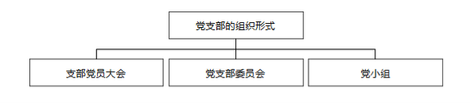
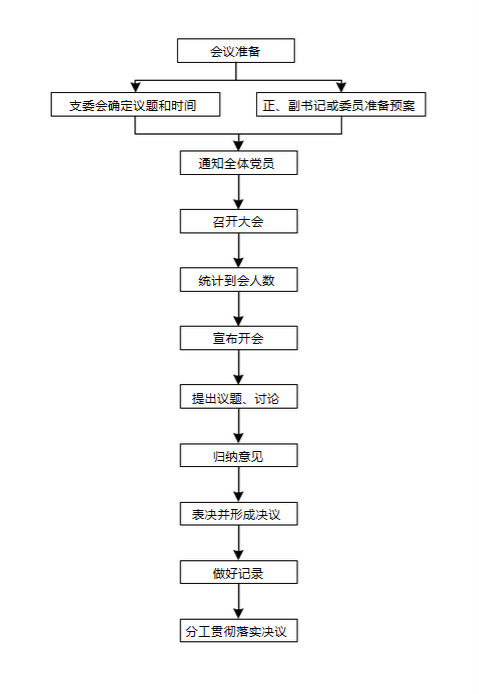
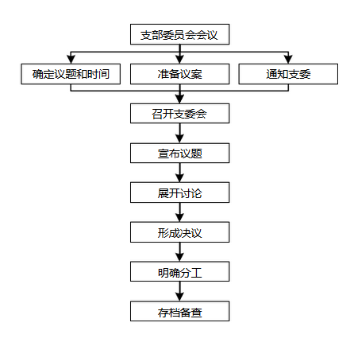
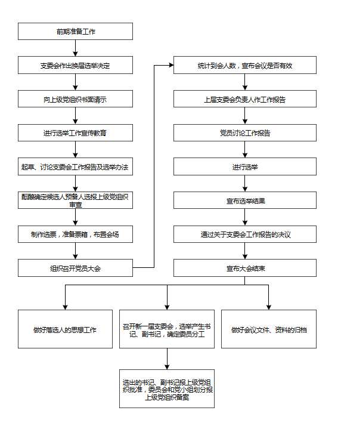

第一章 党支部组织形式和会议制度
1.1党支部的组织形式
党支部的组织形式
支部党员大会：
支部党员大会是党支部全体党员参加的会议，是党支部的最高领导机关，具有讨论决定党支部重要问题的职能，在党支部中享有最高决策权、选举权和监督权。
支部委员会：
党支部委员会是党支部的领导班子，由支部党员大会选举产生。在党员大会闭会期间，党支部委员会负责领导和处理党支部的日常工作。支部委员会对支部党员大会和全体党员负责，同时对上级党组织负责，接受上级党组织领导。支部委员会实行集体领导和个人分工负责的领导制度。
支部委员会委员的职数和设置：
应根据支部党员人数和工作需要来确定。党员人数超过 7 人的，应设支部委员会；党员人数不足 7 人的，只设书记 1 人，必要时可增设副书记1 人。支部委员会一般设委员 3-5 人，最多不超过 7 人，其中设书记 1 人，必要时设副书记 1 人；总支部委员会一般设委员 5-7 人，最多不超过 9 人，其中设书记 1 人，副书记1人。
支部委员会书记和委员的设立：
根据支部委员职数的多少和实际需要分别设支部书记、副书记、组织委员、宣传委员、纪检委员、群团工作委员等。党员少的支部，可设 3 名，如支部书记，组织委员，宣传委员；或不设支委会，只设书记，必要时可增设副书记 1 人。
党小组：
党小组不是党的一级组织，而是在党支部直接领导下对党员进行教育和管理的一种组织形式，是党支部的组成部分。党员人数较多、工作相对分散的党支部，可划分若干党小组，每个党小组选举党小组长 1 人。一个党小组不应少于 3 名党员，其中至少有 1 名正式党员。党员数量较少的党支部不划分党小组，由党支部直接组织党员活动。
确立党支部组织形式应注意的问题：
（1）确立党支部组织形式，应当由县级或相当于县级党的委员会决定。
（2）站在巩固党执政的组织基础、提高党的执政能力的高度，按照“先行组建、逐步提高、分类指导”的思路，建立基层党支部的工作力度，努力做到哪里有群众哪里就有党的工作、哪里有党员哪里就有党的组织、哪里有党的组织哪里就有健全的组织生活和坚强的战斗力。
党支部的组织形式图示

1.2党支部党员大会
党支部党员大会的职能和主要内容：
（1）定期听取、讨论和审查支部委员会的工作报告，对支部委员会的工作进行监督。
（2）讨论并决定党支部的重大问题。如传达、学习党的路线、方针、政策和上级党组织的决议、指示，制定在本单位贯彻执行的计划和措施；讨论、审批新党员和预备党员转正；讨论决定对党员的表彰和处分等。
（3）选举产生新的支部委员会及出席上级党的代表大会的代表，增补和撤销支部委员。
（4）讨论决定党支部其他重要事项。
党支部党员大会的基本程序：
（1）会前由支委会确定党员大会议题和时间，正、副书记或委员准备预案，通知全体党员。
（2）党员大会一般由支部书记主持。如果支部书记因故缺席，由支部副书记或支部委员主持。主持人要报告支部党员的应到数、实到数、缺席数，如有缺席，要说明党员缺席的原因，宣布会议是否有效。然后，宣布开会，提出议题，围绕会议的中心议题按规定程序主持讨论。党员要充分发表意见，对需要做出决议的议题，归纳党员意见，按少数服从多数的原则进行表决形成决议，需要贯彻落实的提出要求措施。
（3）做好会议记录。记录的内容包括会议时间、地点，党员出席和缺席情况，大会的中心议题，党员发言的要点，讨论中的不同意见，支部党员大会做出的决议，如何落实会议决议。会议结束后，记录归档保存。
（4）参加会议的正式党员超过应到会人数半数，支部大会方能召开。进行选举时，到会的正式党员人数必须超过应到会党员人数的五分之四。
召开党员大会应注意的问题：
（1）党员大会讨论议题时，应鼓励和支持党员充分发表意见，畅所欲言，从而集中正确的意见，做出正确的决议。
（2）通过表决时，对于经过讨论还存在较大分歧、一时难以统一的问题，只要不是紧急的事情，不必匆忙做出决议，可让党员会后分头酝酿，下次会议再议。
（3）党员大会的决议一经形成后，每名党员都要坚决服从，认真贯彻执行，不允许存在“特殊党员”。
（4）支部党员大会一般每三个月召开一次，根据工作需要可提前召开，无特殊情况，一般不宜推迟举行。
党支部党员大会召开一般程序

1.3党支部委员会会议
党支部委员会会议职责和主要内容：
党支部委员会会议是党支部实行集体领导的基本形式，也是充分发挥集体经验和智慧潜能的重要途径。党支部委员会会议的主要内容有：
（1）贯彻执行上级党组织的指示、决定和支部党员大会的决议。
（2）通过做好党员教育管理监督、搞好支部自身建设的决议。
（3）通过向支部党员大会和上级党组织的报告。
（4）研究如何做好党支部日常工作，支部工作计划，检查和总结支部工作。
（5）研究领导工会、共青团等群团组织的工作。
（6）研究保障中心工作任务完成的措施。
党支部委员会会议的程序：
（1）正、副书记提前通气，确定会议议题和时间，准备议案，并通知支部委员。
（2）支部书记或副书记主持会议，宣布会议议题和内容，主持集体讨论，要善于集中大家的智慧，充分发扬民主，在民主基础上实行集中。
（3）集中多数人意见，按民主集中制原则形成决议或决定。
（4）对决定的事项提出明确分工，分头抓好落实。
（5）把支部委员会会议做出的决议、决定和会议记录，及时整理后存档备查。
召开党支部委员会会议应注意的问题：
（1）支部委员会会议要定期召开，原则上每月召开一次，也可根据需要随时召开，必要时可召开支部委员扩大会，吸收党小组长和有关党员干部参加。
（2）要有明确的会议议题，会前把议题通知支部委员提前做好准备，会上紧密围绕议题展开讨论，使会议收到预期的效果。
（3）支部党员大会与支部委员会的关系。支部委员会由支部党员大会差额选举产生，对支部党员大会和上级党组织负责。党支部的重大问题，应由支部党员大会讨论决定。为便于支部党员大会对重要问题进行讨论和作出决定，支部委员会可以提出初步意见和方案，但不能把它强加给支部党员大会，更不允许把支部委员会置于支部党员大会之上。支部委员会作出的决定和决议，支部党员大会有权修改和否定。
党支部委员会会议议程

1.4党支部委员会换届选举程序
党章规定，党的基层委员会、总支部委员会、支部委员会每届任期三年至五年。根据这一规定，支部委员会任期届满时，应及时进行选举；不设支部委员会的党支部，也要根据上述规定，按期改选支部书记。如需延期或提前进行换届选举，应报上级党组织批准。延长期限一般不超过一年。
支部遇有以下几种特殊情况，应提前进行改选：
（1）支部委员会任期未满，但发生委员缺额较多，使支部工作不能正常开展的；
（2）支部委员会严重破坏党的纪律，不贯彻党的路线、方针政策和决议，党员强烈要求改选的；
（3）由于其他原因，上级党组织要求提前改选的。
支部暂缓改选的几种情况：
（1）党支部多数委员外出工作，无法按期改选的；
（2）党支部任期届满时，正值完成某项重要任务的关键时刻，不宜立刻改选的；
（3）因党支部存有种种问题，需要进行整顿的；
（4）新建立的单位，实行民主选举的条件还不成熟的；
（5）由于其他原因，上级党组织决定延期改选的。
支部换届选举应注意的问题：
（1）支委会做出换届选举的决定后，要及时向上级党组织提出书面请示，进行选举工作的宣传教育，起草、讨论支委会工作报告及选举方法，酝酿、确定支委候选人预备人选，并报上级党组织审查。
（2）在做好制作选票、准备票箱、布置会场等准备工作的基础上，适时召开党员大会进行选举；要认真统计到会人数，宣布会议是否有效，由上届支委会负责人作工作报告，党员讨论工作报告，进行选举，通过关于支委会工作报告的决议。
（3）会后要及时召开新一届支委会，选举产生书记、副书记，确定委员分工；选出的书记、副书记要报上级党组织批准；委员的分工和党小组划分要报上级党组织备案；要做好落选人的思想工作，做好会议文件、资料的归档工作。
党支部委员会换届选举一般程序
注：不含具体细节，如全体唱国际歌

1.5党小组的划分和建立
党小组的划分，要从党小组开展工作方便、灵活、精干的特点出发，从实际情况出发，具体问题具体分析，坚持有利于开展党内活动的原则。
党小组和党员的接触更紧密，更了解一般党员的思想、工作、学习及生活状况，更容易把党员集中起来、团结起来、组织起来，以有利于更好地开展党内工作。在党小组划分时，要根据各单位的具体情况、工作性质、环境等来划分，要按照党员的数量、工作需要党员素质和党员的分布来划分（需要特别注意的是，党小组没有规定人数上限）。
划分党小组应注意的问题：
（1）对于担任领导职务的党员，不要把他们单独编成一个党小组，应按照其工作部门编入党小组。
（2）为了对预备党员加强教育和考察，不要把预备党员单独编成党小组，而应同正式党员编在一起过党的小组生活。
（3）对于党员较少的党支部，如不足 6 名党员，可不再划分党小组，党员的组织生活和学习等活动，由支部书记直接组织进行。
党小组是党支部的组成部分，不是党的一级组织。所以，建立党小组须由支部委员会研究决定，不必报请上级党组织批准。但是，支部委员会应将本支部党小组的组建情况报告上级党组织。
党小组的建立方法：
（1）党员人数最低不能少于 3人，并且其中至少要有一名正式党员。
（2）党员人数不足 3人的，可于相邻的其他组织的党员合编成立联合党小组。
（3）党员外出学习、培训或执行任务，人数达到 3 人且至少有一名正式党员的，可建立临时党小组。
（4）党员人数较少的党支部，根据具体情况，也可以不设党小组，由党支部安排组织党员活动。
1.6党小组会议
党小组会议是党员组织生活的重要组成部分，是党小组活动的主要形式之一。党支部的许多工作都要在党小组会议上研究讨论并贯彻执行。
党员参加党小组会议，可以更好地交流思想，了解情况，开展批评与自我批评，过好党的组织生活。
党小组会议的主要内容：
党小组会议的内容要围绕党的中心工作和党支部的具体任务，并结合党小组的实际情况来确定。
（1）组织党员学习马克思列宁主义、毛泽东思想、邓小平理论、“三个代表”重要思想、科学发展观和习近平新时代中国特色社会主义思想，学习党的基本知识、科学文化和业务知识。
（2）讨论和贯彻执行支部决议的具体措施和方法。
（3）听取党员思想汇报和工作情况。
（4）安排党小组生活会，开展批评与自我批评。
（5）研究选举和发展党员工作。
（6）评选优秀党员，讨论对党员的处分等。
开好党小组会议应注意的问题：
（1）认真做好开会前的准备工作。开会前，党小组长要与党支部沟通，确定党小组会的内容、召开方法及应注意的问题，并事先通知小组党员，让大家做好准备。
（2）抓住中心内容讨论，力求做到思想统一。会议上讨论的问题要集中，党小组长要掌握好集中讨论的问题，引导大家围绕中心问题开展讨论，防止漫无边际、离题太远，要集中解决一两个问题，力求做到思想统一。
（3）每次党小组会议，都要指定专人做好会议记录，在会议结束前都要进行归纳小结，对党员提出要求。会议结束后要将会议的情况及时向党支部汇报。
（4）明确责任，及时督促检查议定内容的落实。
（5）定期开好党小组会议是搞好党小组建设的重要环节，党小组会议每月不得少于一次，如党支部有特殊任务，次数应当增加。
1.7党课制度
党课是指利用讲党课的形式对党员进行最经常、最基本的教育的一种形式，是保持党员队伍先进性的重要途径 。在一般情况下，原则上每季度至少上一次党课，也可以根据形势任务的需要，相对集中使用党课教育时间。党支部要从本单位的实际情况出发，采取切实可行的措施，保证党员都按时上党课。
党课是党的组织生活的一种常用制度。能否坚持党课制度，抓好党课教育，是衡量党支部组织生活制度是否健全的一个重要内容。
党课的内容：
（1）学习基本理论：加强马克思列宁主义、毛泽东思想、邓小平理论、“三个代表”重要思想、科学发展观和习近平新时代中国特色社会主义思想等基本理论学习。
（2）学习党的路线、方针、政策和决议。
（3）学习党章和党的基本知识。
（4）形势与政策教育，世情国情党情教育。
（5）党的优良传统和党性党风党纪教育，党的廉政教育。
（6）学习先进模范，进行党员思想教育。
（7）学习市场经济知识，学习科学、文化、法律和业务知识。
（8）学习企业文化知识。
（9）学习社会主义核心价值观、中华民族优秀文化和传统美德等。
党课一般以《党章》为基本教材，并结合学习有关文件；也可根据统一党课教材来讲，或自己编写材料。党课的内容要在注意系统性的同时，力求搞好党员的思想调查，要针对党员一定时期的思想倾向和共性问题加以确定。
党课制度实施应注意的问题：
（1）党课教员一般由在同级党组织中担任一定领导职务的党员领导干部或先进党员代表担任，也可以聘请上级党组织的党员领导干部兼任，或聘请专家学者、模范人物、党校教师兼任。党课教员要掌握党课教育计划，对党员队伍状况有比较深入的调查和了解。坚持理论联系实际，在讲课中不仅要讲清楚基本道理，还要联系实际有针对性地解决党员思想认识上的问题。
（2）党支部组织党课教育，要根据上级党委或政治机关的统一部署，在搞好调查研究的基础上，制定具体的实施计划和方案，明确好党课教育的内容、时间、讲课教员、解决的主要问题、形式方法、基本要求等。如有必要，可请示上级党组织，争取上级党组织的指导。讲课以后，党支部要组织讨论，消化党课内容。对党员参加听课、学习讨论的情况要及时进行归纳和总结讲评，分析存在问题，提出解决办法，对大家提出的疑难问题作出解答，巩固深化教育效果。对以党的基本知识和党纪条规、党建理论为主要内容的党课教育，课后可以组织考核或测验。
（3）党员在接受党课教育时要有学习材料、有学习笔记。党支部要定期检查党员学习情况，如出勤、笔记等，作为考察党员参加组织生活、接受党组织教育、管理、监督的内容和依据。
（4）对缺课的党员，应及时做好补课。
第二章 党支部委员职责
2.1党支部书记的职责
党支部书记是支部委员会的主要负责人，在支部委员会的集体领导下按照支部党员大会、支部委员会的决议，负责主持党支部的日常工作。
党支部书记的职责：
（1）贯彻党的路线、方针、政策，传达上级党组织的指示、决议，紧密结合本单位工作实际和党员群众的思想实际加以落实。
（2）支持行政工作，保障生产工作和各项任务的完成。
（3）召集和主持支部党员大会、支部委员会会议。
（4）检查党支部工作计划和决议的执行情况，督促、检查支部工作计划和决议的执行落实。
（5）抓好支部委员会的自身建设。
党支部书记在企业管理中的作用：
参与本单位生产经营重大问题和措施的研究、制定，决策的实施，组织党员、群众努力实现生产经营目标，确保安全。
党支部书记履行职责应注意的问题：
（1）党支部书记与支部委员的关系。在党支部委员会内部，书记和委员都是平等的一员，享有同样的权利，履行同样的义务，都必须把自己置于支部委员会的集体领导和监督之下。党支部书记和支部委员之间不是上下级的关系，而是分工负责的关系。在支部委员会做出决定时，书记和委员都只有一票的表决权利，并根据多数人的意见做出决定。
（2）支部委员会实行集体领导，党支部书记负有组织支部的活动和处理日常工作的重要责任，不应借口集体领导而降低或否定书记在支部活动中的作用。书记应有良好的作风，善于听取各方面的意见，主动地团结好其他委员，发挥他们的作用，决不能把自己摆在支委会之上个人决定重大问题。其他支部委员要认真负责地完成所分管的工作，积极参与集体领导，支持书记的工作，共同做好党支部工作。
（3）党支部决定重大问题，要通过支部委员会集体讨论决定，党支部书记的意见、建议一旦被否决，应无条件执行支部委员会做出的决议。
（4）党支部书记在工作中要注意总揽全局，抓住主要矛盾，按照轻重缓急有步骤地推进工作，要放手让支部委员大胆开展工作，激发党小组长的工作热情，使党支部工作分工负责的制度得到圆满落实。
2.2党支部组织委员的职责
党支部组织委员在支部委员会的集体领导下，负责党支部的组织建设工作。
党支部组织委员的职责：
（1）熟悉和掌握党支部的组织状况，管理党员登记、统计，根据实际情况，提出党小组的划分和调整意见，检查和督促党小组过好组织生活。收缴党费，办理转移组织关系。
（2）了解和掌握党员的思想、工作状况，协助宣传委员、纪检委员对党员进行思想教育和纪律教育，收集和整理党员的先进模范事迹，检查党员遵守党纪情况，向支部委员会提出表扬奖励党员的建议和对违纪党员进行组织处理的意见。
（3）管理发展党员工作。按照发展党员工作的总要求，及时了解和掌握要求入党积极分子的情况，把政治标准放在首位，制定切实可行的发展党员工作计划：负责组织对积极分子的培养、教育和考察；具体办理接收新党员的手续；组织对预备党员的考察教育，提出预备党员转正意见，提交支委会和党员大会讨论，办理预备党员转正手续。
（4）做好党员组织管理工作。例如接转党员组织关系，党费的收缴与管理，定期完成党员统计、党员登记和鉴定等工作。
（5）不设纪检委员的党支部，有关纪检方面的工作，一般也由党支部组织委员负责。
党支部组织委员履行职责应注意的问题：
（1）要按照全面从严治党的方针，把增强党员的组织观念、强化组织纪律、严格组织生活作为工作的用力点，加强对党员的教育、管理和监督工作。
（2）健全党支部组织建设制度，凡是有利于严格组织管理的各项制度要逐步建立，并不断改进和完善，探索民主集中制在党支部落实的有效措施，引导和促进党员按时参加组织活动，如确有正当原因不能参加，向党支部请假。
（3）按照上级党组织要求和党支部的工作安排，组织做好党员民主评议工作，促进党内民主生活会制度的落实。
2.3党支部宣传委员的职责
党支部宣传委员在支部委员会的集体领导下，负责党支部的宣传工作。
党支部宣传委员的职责：
（1）负责党支部的宣传教育工作，了解掌握党员和群众的思想状况，提出宣传教育工作的意见，适时开展思想教育和宣传鼓动工作。
（2）组织党员和群众认真学习马克思列宁主义、毛泽东思想、邓小平理论、“三个代表”重要思想、科学发展观和习近平新时代中国特色社会主义思想，学习党的基本路线和党的基本知识，学习时事政治以及完成上级布置的学习任务，拟订学习计划和建议，检查学习情况，及时向党支部反映学习情况。协助搞好党课，指导谈心活动，协同搞好发展对象的教育，做好思想政治工作。
（3）围绕党支部的中心工作，开展多种形式的宣传鼓动工作和主题教育活动，指导本单位的党员和群众学习科技文化知识，组织开展丰富多彩的文化体育活动等。
（4）管理党报、党刊和党员读物，搞好党报党刊的通讯报道和发行工作，办好本单位的宣传阵地。
党支部宣传委员履行职责应注意的问题：
（1）要以建设学习型党支部为目标，倡导党员争当自觉学习的模范，组织开展多种形式的学习交流活动，在党内形成浓厚的学习氛围。
（2）组织开展宣传思想工作，加强日常党员、群众的思想教育，要探索灵活多样、实效性强的方式方法，对思想问题主要采取疏导、调节和转化的方法，把解决思想问题与解决实际问题相结合，晓之以理，动之以情，帮助党员、群众消除思想障碍，架设思想沟通的桥梁，充分调动他们的积极性、主动性和创造性。
（3 ）坚持推动思想政治工作结合业务工作一道去做，注重总结把思想政治工作贯穿于业务工作全过程去做的成功经验，及时把握群众的思想脉搏，解决好出现的各种思想问题，保证经济工作和业务工作的顺利进行。
2.4.党支部纪律检查委员的职责
党支部作为党的基础组织，在维护党纪方面具有上级党组织和党的纪律检查机关所无法替代的作用。党支部要按照《党章》规定的任务和经常性的工作要求，认真做好党支部的纪律检查工作。党支部纪律检查委员在支部委员会的集体领导下分管纪律检查工作，承担着重要的纪律检查职责。
党支部纪律检查委员的职责：
（1）负责党支部的作风建设。纪律检查委员要坚持党性原则，从教育入手，协助组织委员、宣传委员经常对党员进行党性党风党纪教育，不断提高全体党员遵纪守法的自觉性；提出加强纪律、端正党风的建议和办法。
（2）检查、监督党员执行党的路线、方针、政策的情况，检查党员学习、遵守、贯彻、维护党章的情况；了解党员守纪情况，负责检查党员执行《关于新形势下党内政治生活的若干准则》《中国共产党廉洁自律准则》《中国共产党纪律处分条例》等党风廉政建设法律法规的情况，同各种违纪行为和腐败现象作坚决斗争。
（3）受理和转递党员的控告和申诉，以事实为依据，以法律为准绳，公正客观地维护党员的民主权利；要特别注意严肃查处压制批评、对敢于反映真实情况的同志进行打击报复等严重侵犯党员民主权利的行为。
（4）对党员进行纪律监督，坚持惩前毖后、治病救人，严格按政策规定认真调查、及时处理党员违反党的章程和违犯党的纪律的问题；受理群众对党员的检举、控告。
（5）对受党纪处分的党员进行教育和考察，考察了解受处分党员改正错误的情况，将教育考察的意见进行登记；发现问题要及时同本人谈话。
（6）经常向支部委员会和上级党组织汇报和反映本支部的党风党纪情况；发现问题要及时上报；协助党支部委员会和上级纪律检查委员会加强党风建设和反腐败工作，有效维护和执行党的纪律。
党支部纪律检查委员履行职责应注意的问题：
（1）党支部纪律检查委员受支部委员会和上级纪律检查委员会的双重领导，以支部委员会的领导为主。在工作中如与支部委员会有不同意见，可以向上级纪律检查委员会反映。
（2）注重完善维护和落实党的纪律的制度措施，使严肃党纪的工作制度化、规范化。
（3）对党员的处理要持十分慎重的态度。处理党员违纪问题，坚持把纪律挺在前面，坚持党纪面前一律平等，坚持实事求是，认真贯彻“事实清楚、证据确凿；定性准确、处理恰当；程序合法、手续完备”的方针，经得起历史的考验。
（4）注重提高纪律检查工作预见性，把超前教育、制度约束、监督惩戒工作有机结合起来，提高纪律检查工作的水平和实效性。
2.5.党支部青年委员的职责
党的十九大报告指出，青年兴则国家兴，青年强则国家强。青年一代有理想、有本领、有担当，国家就有前途，民族就有希望。中国梦是历史的、现实的，也是未来的；是我们这一代的，更是青年一代的。中华民族伟大复兴的中国梦终将在一代代青年的接力奋斗中变为现实。全党要关心和爱护青年，为他们实现人生出彩搭建舞台。
党支部青年委员在党支部委员会集体领导下，分工负责指导共青团支部工作和青年工作。
党支部青年委员的责任主要为指导、帮助、监督共青团组织，以党的十九大精神为指导，充分发挥团支部组织青年、宣传青年、凝聚青年、服务青年的作用，支持团的建设，做好新时代的青年群众工作。
党支部青年委员的主要职责是：
（1）认真贯彻执行上级党组织和党支部关于共青团工作的指示和要求，围绕党的中心工作，指导团支部积极开展活动，充分发挥其党的助手作用。同时需要注意的是党支部要管好团支部的重大决策，保证在重大关头的决策正确性。
（2）指导团支部加强对团员和青年的政治思想教育，教育团员和青年做有理想、有道德、有文化、有纪律的青年。通过有效的管理手段，指导团组织贯彻执行党的路线、方针、政策，同党中央在政治上、思想上、行动上保持高度一致，保证青年工作正确的政治方向，这是党的青年工作的根本任务，是党对共青团组织实行领导的核心内容。
（3）教育团员和青年努力学习马克思列宁主义、毛泽东思想、邓小平理论、“三个代表”重要思想、科学发展观、习近平新时代中国特色社会主义思想，学习党的路线方针政策，学习科学、文化、法律和业务知识，热爱本职工作，精通业务，积极为现代化建设作贡献；并且支持团支部根据广大团员、青年的特点和需要，开展文娱体育活动，增强体质，活跃文化生活。
（4）加强对团支部的领导。青年委员要积极落实党的各级委员对共青团的领导，指导团支部做好团干部的选拔、培训和换届选举工作。充分发挥共青团的突击队作用和联系广大青年的桥梁纽带作用。
（5）按照党管干部的原则，加强对团支部干部的管理和教育。在充分协商取得一致意见基础上推荐和调动团支部干部。加强对团支部干部的考核和培养。同时做好协调管理工作，协调好团支部同行政领导之间的关系，使单位各项工作得到团支部的支持和合作。
（6）做好基层“党建带团建”的有关工作，对团组织的“推优”工作及时给予指导，推荐优秀团员作为党的发展对象。
第三章 发展党员工作
中国共产党发展党员工作细则
（中共中央办公厅 2014 年 5 月 28 日印发）
第一章 总则
第一条
为了规范发展党员工作，保证新发展的党员质量，保持党的先进性和纯洁性，根据《中国共产党章程》和党内有关规定，制定本细则。
第二条
党的基层组织应当把吸收具有马克思主义信仰、共产主义觉悟和中国特色社会主义信念，自觉践行社会主义核心价值观的先进分子入党，作为一项经常性重要工作。
第三条
发展党员工作应当贯彻党的基本理论、基本路线、基本纲领、基本经验、基本要求，按照控制总量、优化结构、提高质量、发挥作用的总要求，坚持党章规定的党员标准，始终把政治标准放在首位；坚持慎重发展、均衡发展，有领导、有计划地进行；坚持入党自愿原则和个别吸收原则，成熟一个，发展一个。
禁止突击发展，反对“关门主义”。
第二章 入党积极分子的确定和培养教育
第四条
党组织应当通过宣传党的政治主张和深入细致的思想政治工作，提高党外群众对党的认识，不断扩大入党积极分子队伍。
第五条
年满十八岁的中国工人、农民、军人、知识分子和其他社会阶层的先进分子，承认党的纲领和章程，愿意参加党的一个组织并在其中积极工作、执行党的决议和按期交纳党费的，可以申请加入中国共产党。
第六条
入党申请人应当向工作、学习所在单位党组织提出入党申请，没有工作、学习单位或工作、学习单位未建立党组织的，应当向居住地党组织提出入党申请。
流动人员还可以向单位所在地党组织或单位主管部门党组织提出入党申请，也可以向流动党员党组织提出入党申请。
第七条
党组织收到入党申请书后，应当在一个月内派人同入党申请人谈话，了解基本情况。
第八条
在入党申请人中确定入党积极分子，应当采取党员推荐、群团组织推优等方式产生人选，由支部委员会（不设支部委员会的由支部大会，下同）研究决定，并报上级党委备案。
第九条
党组织应当指定一至两名正式党员作入党积极分子的培养联系人。培养联系人的主要任务是：
（一）向入党积极分子介绍党的基本知识；
（二）了解入党积极分子的政治觉悟、道德品质、现实表现和家庭情况等，做好培养教育工作，引导入党积极分子端正入党动机；
（三）及时向党支部汇报入党积极分子情况；
（四）向党支部提出能否将入党积极分子列为发展对象的意见。
第十条
党组织应当采取吸收入党积极分子听党课、参加党内有关活动，给他们分配一定的社会工作以及集中培训等方法，对入党积极分子进行马克思列宁主义、毛泽东思想和中国特色社会主义理论体系教育，党的路线、方针、政策和党的基本知识教育，党的历史和优良传统、作风教育以及社会主义核心价值观教育，使他们懂得党的性质、纲领、宗旨、组织原则和纪律，懂得党员的义务和权利，帮助他们端正入党动机，确立为共产主义事业奋斗终身的信念。
第十一条
党支部每半年对入党积极分子进行一次考察。基层党委每年对入党积极分子队伍状况作一次分析。针对存在的问题，采取改进措施。
第十二条
入党积极分子工作、学习所在单位（居住地）发生变动，应当及时报告原单位（居住地）党组织。原单位（居住地）党组织应当及时将培养教育等有关材料转交现单位（居住地）党组织。现单位（居住地）党组织应当对有关材料进行认真审查，并接续做好培养教育工作。培养教育时间可连续计算。
第三章 发展对象的确定和考察
第十三条
对经过一年以上培养教育和考察、基本具备党员条件的入党积极分子，在听取党小组、培养联系人、党员和群众意见的基础上，支部委员会讨论同意并报上级党委备案后，可列为发展对象。
第十四条
发展对象应当有两名正式党员作入党介绍人。入党介绍人一般由培养联系人担任，也可由党组织指定。
受留党察看处分、尚未恢复党员权利的党员，不能作入党介绍人。
第十五条
入党介绍人的主要任务是：
（一）向发展对象解释党的纲领、章程，说明党员的条件、义务和权利；
（二）认真了解发展对象的入党动机、政治觉悟、道德品质、工作经历、现实表现等情况，如实向党组织汇报；
（三）指导发展对象填写《中国共产党入党志愿书》，并认真填写自己的意见；
（四）向支部大会负责地介绍发展对象的情况；
（五）发展对象批准为预备党员后，继续对其进行教育帮助。
第十六条
党组织必须对发展对象进行政治审查。政治审查的主要内容是：对党的理论和路线、方针、政策的态度；政治历史和在重大政治斗争中的表现；遵纪守法和遵守社会公德情况；直系亲属和与本人关系密切的主要社会关系的政治情况。
政治审查的基本方法是：同本人谈话、查阅有关档案材料、找有关单位和人员了解情况以及必要的函调或外调。在听取本人介绍和查阅有关材料后，情况清楚的可不函调或外调。对流动人员中的发展对象进行政治审查时，还应当征求其户籍所在地和居住地基层党组织的意见。
政治审查必须严肃认真、实事求是，注重本人的一贯表现。审查情况应当形成结论性材料。
凡是未经政治审查或政治审查不合格的，不能发展入党。
第十七条
基层党委或县级党委组织部门应当对发展对象进行短期集中培训。培训时间一般不少于三天（或不少于二十四个学时）。培训时主要学习党章、《关于党内政治生活的若干准则》等文件。中央组织部组织编写的《入党教材》，可以作为学习辅导材料。
未经培训的，除个别特殊情况外，不能发展入党。
第四章 预备党员的接收
第十八条
接收预备党员应当严格按照党章规定的程序办理。
第十九条
支部委员会应当对发展对象进行严格审查，经集体讨论认为合格后，报具有审批权限的基层党委预审。
基层党委对发展对象的条件、培养教育情况等进行审查，根据需要听取执纪执法等相关部门的意见。审查结果以书面形式通知党支部，并向审查合格的发展对象发放《中国共产党入党志愿书》。
发展对象未来三个月内将离开工作、学习单位的，一般不办理接收预备党员的手续。
第二十条
经基层党委预审合格的发展对象，由支部委员会提交支部大会讨论。
召开讨论接收预备党员的支部大会，有表决权的到会人数必须超过应到会有表决权人数的半数。
第二十一条
支部大会讨论接收预备党员的主要程序是：
（一）发展对象汇报对党的认识、入党动机、本人履历、家庭和主要社会关系情况，以及需向党组织说明的问题；
（二）入党介绍人介绍发展对象有关情况，并对其能否入党表明意见；
（三）支部委员会报告对发展对象的审查情况；
（四）与会党员对发展对象能否入党进行充分讨论，并采取无记名投票方式进行表决。赞成人数超过应到会有表决权的正式党员的半数，才能通过接收预备党员的决议。因故不能到会的有表决权的正式党员，在支部大会召开前正式向党支部提出书面意见的，应当统计在票数内。
支部大会讨论两个以上的发展对象入党时，必须逐个讨论和表决。
第二十二条
党支部应当及时将支部大会决议写入《中国共产党入党志愿书》，连同本人入党申请书、政治审查材料、培养教育考察材料等，一并报上级党委审批。
支部大会决议主要包括：发展对象的主要表现；应到会和实际到会有表决权的党员人数；表决结果；通过决议的日期；支部书记签名。
第二十三条
预备党员必须由党委（工委，下同）审批。
乡镇（街道）党委所属的基层党委，不能审批预备党员，但应当对支部大会通过接收的预备党员进行审议。
党总支不能审批预备党员，但应当对支部大会通过接收的预备党员进行审议。
除另有规定外，临时党组织不能接收、审批预备党员。
党组不能审批预备党员。
第二十四条
党委审批前，应当指派党委委员或组织员同发展对象谈话，作进一步的了解，并帮助发展对象提高对党的认识。谈话人应当将谈话情况和自己对发展对象能否入党的意见，如实填写在《中国共产党入党志愿书》上，并向党委汇报。
第二十五条
党委审批预备党员，必须集体讨论和表决。
党委主要审议发展对象是否具备党员条件、入党手续是否完备。发展对象符合党员条件、入党手续完备的，批准其为预备党员。党委审批意见写入《中国共产党入党志愿书》，注明预备期的起止时间，并通知报批的党支部。党支部应当及时通知本人并在党员大会上宣布。对未被批准入党的，应当通知党支部和本人，做好思想工作。
党委会审批两个以上的发展对象入党时，应当逐个审议和表决。
第二十六条
党委对党支部上报的接收预备党员的决议，应当在三个月内审批，并报上级党委组织部门备案。如遇特殊情况可适当延长审批时间，但不得超过六个月。
第二十七条
在特殊情况下，党的中央和省、自治区、直辖市委员会可以直接接收党员。
第二十八条
对在中国特色社会主义事业中为党和人民利益英勇献身，事迹突出，在一定范围内有较大影响，生前一贯表现良好并曾向党组织提出过入党要求的人员，可以追认为党员。
追认党员必须严格掌握，由所在单位党组织讨论决定后，经上级党委审查，报省一级党委批准。
第五章 预备党员的教育、考察和转正
第二十九条
党组织应当及时将上级党委批准的预备党员编入党支部和党小组，对预备党员继续进行教育和考察。
第三十条
预备党员必须面向党旗进行入党宣誓。入党宣誓仪式，一般由基层党委或党支部（党总支）组织进行。
第三十一条
党组织应当通过党的组织生活、听取本人汇报、个别谈心、集中培训、实践锻炼等方式，对预备党员进行教育和考察。
第三十二条
预备党员的预备期为一年。预备期从支部大会通过其为预备党员之日算起。
预备党员预备期满，党支部应当及时讨论其能否转为正式党员。认真履行党员义务、具备党员条件的，应当按期转为正式党员；需要继续考察和教育的，可以延长一次预备期，延长时间不能少于半年，最长不超过一年；不履行党员义务、不具备党员条件的，应当取消其预备党员资格。
预备党员违犯党纪，情节较轻，尚可保留预备党员资格的，应当对其进行批评教育或延长预备期；情节较重的，应当取消其预备党员资格。
预备党员转为正式党员、延长预备期或取消预备党员资格，应当经支部大会讨论通过和上级党组织批准。
第三十三条
预备党员转正的手续是：本人向党支部提出书面转正申请；党小组提出意见；党支部征求党员和群众的意见；支部委员会审查；支部大会讨论、表决通过；报上级党委审批。
讨论预备党员转正的支部大会，对到会人数、赞成人数等要求与讨论接收预备党员的支部大会相同。
第三十四条
党委对党支部上报的预备党员转正的决议，应当在三个月内审批。审批结果应当及时通知党支部。党支部书记应当同本人谈话，并将审批结果在党员大会上宣布。
党员的党龄，从预备期满转为正式党员之日算起。
第三十五条
预备期未满的预备党员工作、学习所在单位（居住地）发生变动，应当及时报告原所在党组织。原所在党组织应当及时将对其培养教育和考察的情况，认真负责地介绍给接收预备党员的党组织。
党组织应当对转入的预备党员的入党材料进行严格审查，对无法认定的预备党员，报县级以上党委组织部门批准，不予承认。
第三十六条
基层党组织对转入的预备党员，在其预备期满时，如认为有必要，可推迟讨论其转正问题，推迟时间不超过六个月。转为正式党员的，其转正时间自预备期满之日算起。
第三十七条
预备党员转正后，党支部应当及时将其《中国共产党入党志愿书》、入党申请书、政治审查材料、转正申请书和培养教育考察材料，交党委存入本人人事档案。无人事档案的，建立党员档案，由所在党委或县级党委组织部门保存。
第六章 发展党员工作的领导和纪律
第三十八条
各级党委应当把发展党员工作列入重要议事日程，纳入党建工作责任制，作为党建工作述职、评议、考核和党务公开的重要内容。
对发展党员工作情况，市（地、州、盟）、县（市、区、旗）党委每半年检查一次，省、自治区、直辖市党委每年检查一次。检查结果及时上报，并向下通报。
重视从青年工人、农民、知识分子中发展党员，优化党员队伍结构。对具备发展党员条件但长期不做发展党员工作的基层党组织，上级党委应当加强指导和督促检查，必要时对其进行组织整顿。
第三十九条
各级党委组织部门每年应当向同级党委和上级党委组织部门报告发展党员工作情况和发展党员工作计划，如实反映带有倾向性的问题和对违反规定发展党员的查处情况。
第四十条
县以上党委及其组织部门应当重视对组织员的选拔、配备和培训，充分发挥他们在发展党员工作中的作用。
第四十一条
各级党组织对发展党员工作中出现的违纪违规问题和不正之风，应当严肃查处。对不坚持标准、不履行程序、超过审批时限和培养考察失职、审查把关不严的党组织及其负责人、直接责任人应当进行批评教育，情节严重的给予纪律处分。典型案例应当及时通报，对违反规定吸收
入党的，一律不予承认，并在支部大会上公布。
对采取弄虚作假或其他手段把不符合党员条件的人发展为党员，或为非党员出具党员身份证明的，应当依纪依法严肃处理。
第四十二条
《中国共产党入党志愿书》的式样由中央组织部负责制定，省级党委组织部门按照式样统一印制，并严格管理。
第七章 附则
第四十三条
本细则由中央组织部负责解释。
第四十四条
本细则自发布之日起施行。《中国共产党发展党员工作细则（试行）》（中组发〔1990〕3 号）同时废止。